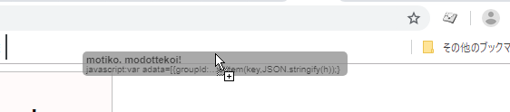

OPENRECのスタンプ履歴へもちこスタンプを強制的に呼び戻すブックマークレット
●はじめに…
スマートフォンアプリにこれを適用する手段は今のところわかっておりません…。（小声）
よってご覧の手順はパソコン版のみ対応です。
●まず以下のリンクをブラウザーのブックマークバーなどへドラッグして、ブックマークレットを登録してください。
【 motiko modottekoi! 】
{if(localStorage.key(i).substring(0,"or:stamp-histories".length)==="or:stamp-histories"){var h=JSON.parse(localStorage[(key=localStorage.key(i))]);break;}}if(key===""){alert("失敗…");}else{for(var idx in adata){for(var i=0;i<h.length;i++){if(h[i]["id"]===adata[idx]["id"]){h.splice(i,1);break;}}h.unshift(adata[idx]);}localStorage.setItem(key,JSON.stringify(h));}){kind=link}
※Google Chromeの場合こんな感じ。あらかじめブックマークバーを表示する設定にしておく。

●OPENREC.tvのサイトをブラウザーで開きます。
OPENREC.tv
●先ほど登録したブックマークを呼び出します。（実行するのはOPENRECトップページでOK。なお実行しても見た目上なにも起こりません）

※注意：スタンプ履歴が1個もない状態では「失敗…」と表示されてうまく行きません。どこか待機所あたりで、どれでもいいのでスタンプを1回送信してから再度試してください。
●以上で手順終了です。成功していればチャットのスタンプ履歴の先頭に、もちこスタンプが出現しています。
before
after

※その他注意事項
・OPENRECプレミアム会員でログインしている必要があります。
・スタンプ履歴が最大何個か知らないので、既にたくさん履歴がある時どのような挙動をするのかわかっておりません。
・Google Chromeでしか動作確認していない。
一応、コード全文をテキストボックスに入れておきます。（コピペで登録を行う人向け）